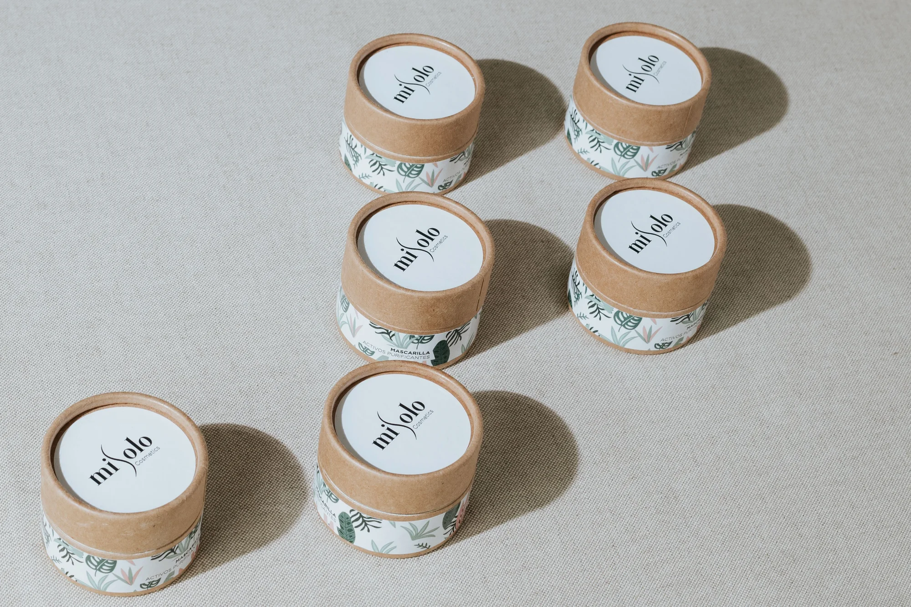
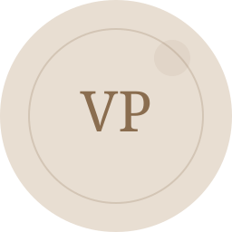

Consulenza personalizzataOgni percorso parte da obiettivi ed esigenze reali.
Medicina estetica naturale a Città Demo
Risultati armoniosi, senza stravolgerti
Consulenze personalizzate e trattamenti su misura per valorizzare il viso e la pelle con equilibrio, chiarezza e attenzione alla tua unicità.
Consulenza personalizzata
Approccio naturale
Percorso su misura
Approccio naturaleRisultati proporzionati, eleganti e riconoscibili.
Studio a Città DemoUn ambiente riservato, curato e professionale.
Contatto direttoInformazioni chiare prima e dopo il trattamento.
Professionista e metodo
La persona prima di ogni trattamento
Prima di proporre una soluzione, ascoltiamo ciò che desideri e valutiamo con attenzione caratteristiche, aspettative e priorità.
Il percorso viene spiegato in modo chiaro: obiettivi realistici, tempi, indicazioni e controlli. Nessun protocollo standard, nessuna promessa fuori misura.
- Valutazione individuale
- Piano chiaro e condiviso
- Follow-up dedicato
Trattamenti
Soluzioni estetiche su misura
Scegli l’area che ti interessa: durante la consulenza individueremo la soluzione più coerente con il risultato che desideri.
01 / Viso
Viso
Percorsi mirati per migliorare freschezza, luminosità e armonia del volto con risultati naturali.
Scopri i trattamenti viso›02 / Corpo
Corpo
Soluzioni personalizzate per tonificare, rimodellare e valorizzare il corpo con equilibrio.
Scopri i trattamenti corpo›03 / Filler
Filler
Trattamenti studiati per valorizzare volumi, proporzioni e armonia del viso senza eccessi.
Scopri i trattamenti filler›Come funziona
Dalla prima richiesta al tuo percorso
Tre passaggi semplici per sapere sempre cosa succede e perché.
Prenota la consulenza
Raccontaci cosa vorresti migliorare e scegli il modo più comodo per essere ricontattata.
Definiamo il percorso
Valutiamo insieme obiettivi, alternative, tempi e risultato realistico.
Iniziamo e monitoriamo
Il trattamento viene seguito con indicazioni chiare e controlli quando necessari.

Prodotti
Prenditi cura del corpo ogni giorno
Prodotti selezionati per accompagnare il percorso corpo anche nella quotidianità, con texture leggere, attivi mirati e una gestualità semplice da integrare ogni giorno.
Scopri i prodottiRecensioni
Recensioni dimostrativeLa fiducia nasce da esperienze autentiche
Queste testimonianze sono contenuti dimostrativi del tema e devono essere sostituite con recensioni reali prima della pubblicazione.

Martina
★★★★★
Ottimo lavoro
Risultato naturale e raffinato. Esattamente quello che desideravo.
Contenuto di esempio”Giulia
★★★★★
Professionale
Pelle più luminosa e idratata. Ho apprezzato attenzione e delicatezza.
Contenuto di esempio”
Elisa
★★★★★
Risultato naturale
Viso più fresco, ma sempre naturale. Un effetto discreto ed elegante.
Contenuto di esempio”Francesca
★★★★★
Delicatezza rara
Mi sono sentita ascoltata dal primo momento. Il risultato è elegante e proporzionato.
Contenuto di esempio”
Sara
★★★★★
Molto soddisfatta
Trattamento delicato, pelle più compatta e luminosa. Tornerò sicuramente.
Contenuto di esempio”
Valentina
★★★★★
Grande attenzione
Consulenza chiara e personalizzata. Ho capito quale percorso fosse più adatto a me.
Contenuto di esempio”Domande frequenti
Le risposte alle domande più frequenti
Ogni trattamento viene valutato con attenzione durante la consulenza, per costruire un percorso sicuro, personalizzato e rispettoso della naturale armonia del viso e del corpo.
La maggior parte dei trattamenti è ben tollerata. Quando necessario, vengono utilizzate tecniche delicate o prodotti specifici per rendere l’esperienza più confortevole possibile.
Sì. L’obiettivo è valorizzare i lineamenti senza stravolgerli, rispettando proporzioni, espressività e caratteristiche personali.
La durata varia in base al trattamento, alla zona trattata, al tipo di pelle e allo stile di vita. Durante la consulenza vengono spiegati tempi, mantenimento e frequenza ideale.
In molti casi sì. Alcuni trattamenti possono lasciare piccoli rossori, gonfiore o sensibilità temporanea, generalmente gestibili e di breve durata.
Sì, la consulenza è fondamentale per valutare esigenze, aspettative, caratteristiche della pelle e indicazioni più adatte. Ogni percorso viene definito in modo personalizzato.
Non è necessario scegliere da soli. Dopo un’analisi accurata, viene consigliato il trattamento più coerente con il risultato desiderato e con l’armonia naturale del viso o del corpo.